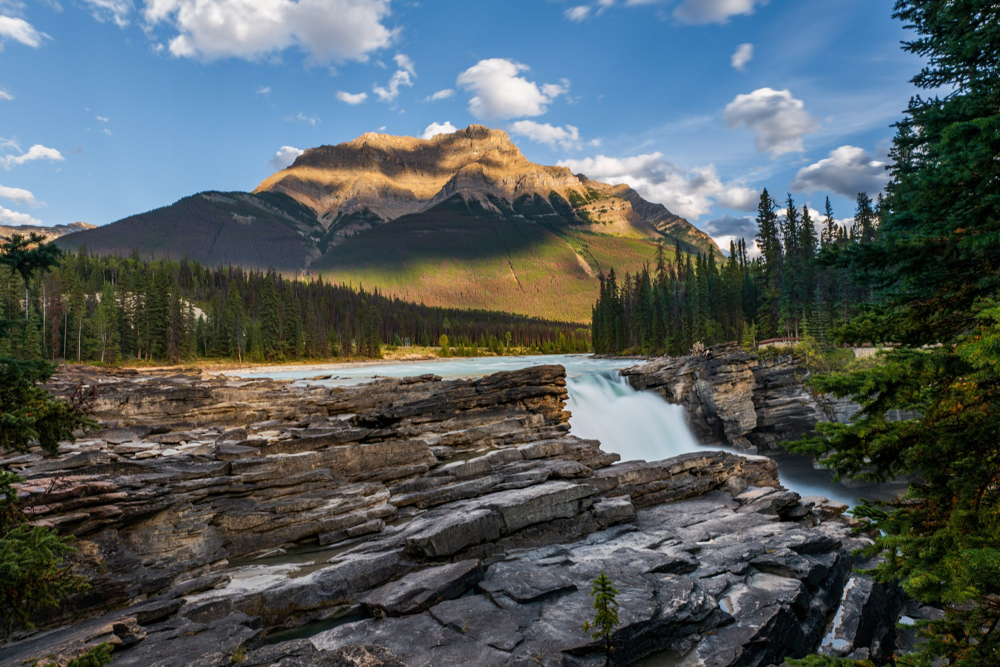
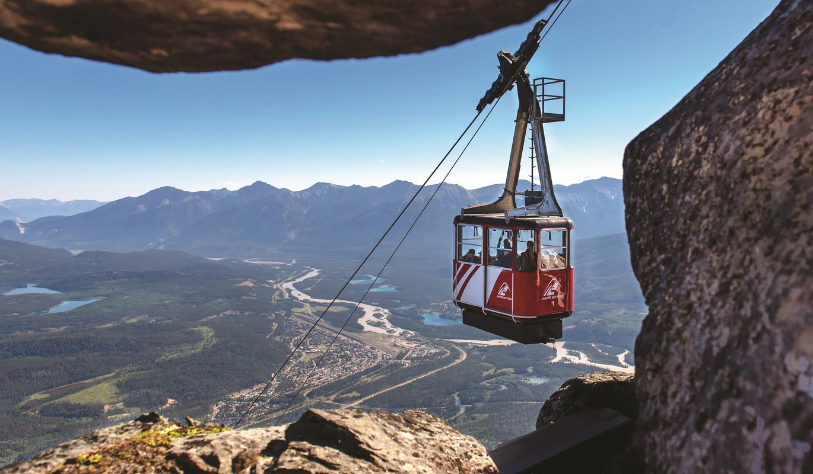
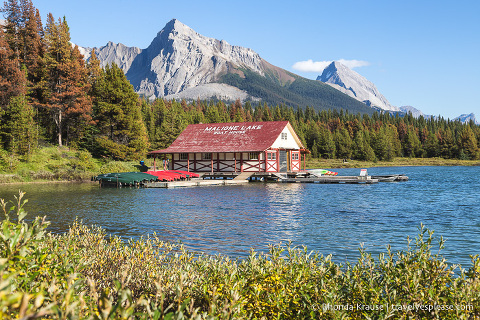
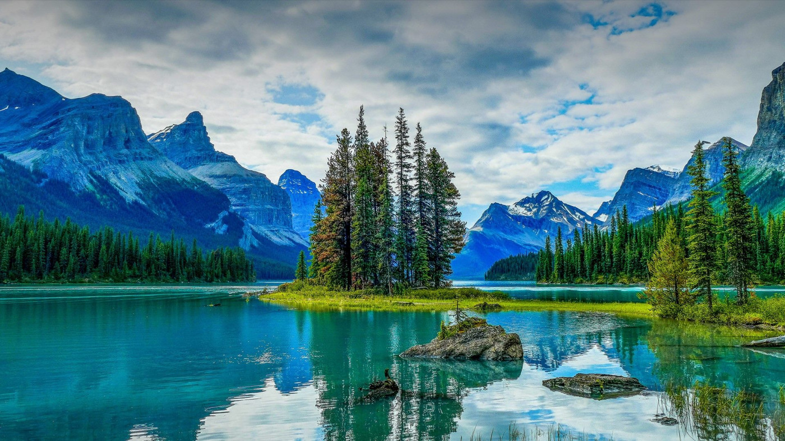
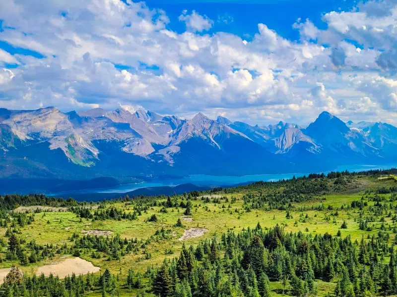
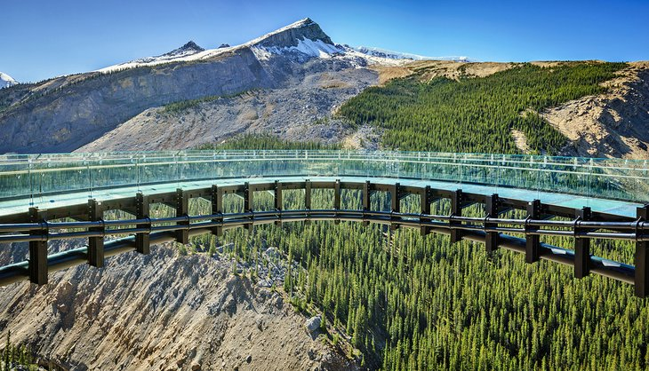
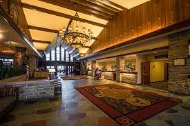
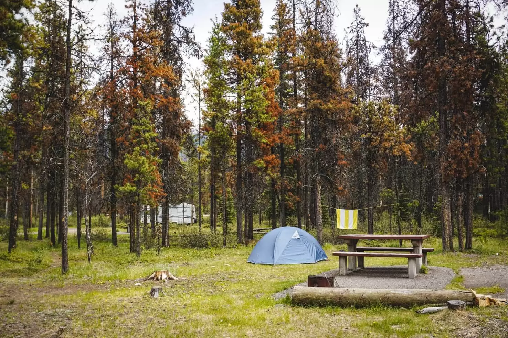
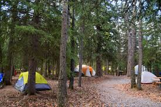
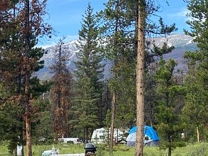

Jasper National Park, located in Alberta, Canada, is the largest national park within Alberta's Rocky Mountains.
It spans an impressive 11,000 km² (4,200 sq mi). The park's history dates back to 1907 when it was established
as Jasper Forest Park. It was later designated as a national park in 1930 and recognized as a UNESCO World Heritage
site in 1984. The park's breathtaking landscape includes glaciers from the Columbia Icefield, picturesque springs,
serene lakes, stunning waterfalls, and majestic mountains.
History
1800s - The Park is named after Jasper Hawes, a fur trader and explorer.
It is believed to be named in honor of his contributions and exploration of the region
1907 - Established as Jasper Forest Park
1930 - Designated as a National Park
1984 - Recognized as UNESCO World Heritage Site
1940s - Jasper National Park used as a training ground for Canadian military during World War II
1960s - Construction of the Icefields Parkway, connecting Jasper to Banff National Park
2011 - Jasper National Park celebrates its centennial anniversary
What to expect?
Jasper is a fantastic place for nature lovers. You can go on amazing hikes in the mountains,
ride bikes on exciting trails, and paddle in the water. If you want a slower
adventure, you can take a drive, have a picnic with beautiful views, and watch animals. In the winter, you can
try fun things like walking in the snow, skiing, riding special bikes, ice skating, and more!

Athabasca Falls
"You could spend a lifetime touring Jasper’s vast wilderness, but even a day will take your breath away."
Top Attractions Near Jasper Downtown

Jasper SkyTram

Maligne Lake Cruise

Spirit Island
Jasper SkyTram
- Ride to an elevation of 2,277 meters for panoramic mountain views.
Approx. 5 minutes (4 km) away from Jasper downtown.
Pyramid Lake
- Tranquil lake offering opportunities for fishing and kayaking.
Approx. 10 minutes (9 km) away from Jasper downtown.
Whistlers Mountain
- Scenic hike with breathtaking views of the surrounding landscape.
Approx. 12 minutes (10 km) away from Jasper downtown.
Wildlife Viewing
- Chance to spot diverse wildlife including elk, deer, and bears.
Various locations near Jasper downtown.
Sunwapta Falls
- Natural cascades surrounded by lush forest.
Approx. 50 minutes (55 km) away from Jasper downtown.
Miette Hot Springs
- Relaxing soak in natural mineral springs.
Approx. 1 hour (63 km) away from Jasper downtown.
Columbia Icefield
- Glacial wonder with a chance to step onto the Athabasca Glacier.
Approx. 1 hour 15 minutes (105 km) away from Jasper downtown.
Athabasca Falls
- Powerful waterfalls and stunning canyon views.
Approx. 30 minutes (30 km) away from Jasper downtown.
Jasper Brewing Co.
- Enjoy locally brewed beers and delicious food.
Approx. 5 minutes (4 km) away from Jasper downtown.
Medicine Lake
- Seasonal disappearing lake with unique geological features.
Approx. 20 minutes (22 km) away from Jasper downtown.
Activities in Jasper
Jasper National Park in the Canadian Rockies offers a diverse range of activities, including hiking through breathtaking landscapes, wildlife viewing, and stargazing in the designated Dark Sky Preserve. Outdoor enthusiasts can explore serene lakes, go biking, and enjoy water adventures like kayaking and fishing. With options for both relaxation and adventure, Jasper National Park is a nature lover's paradise.

Hiking

Columbia Icefield Skywalk

Jasper Park Lodge
Hiking
Explore a variety of hiking trails suitable for all levels. From easy walks to challenging alpine hikes, Jasper offers breathtaking scenery, waterfalls, and stunning viewpoints.
Signal Mountain Trail - Easy - Short hike to Signal Mountain for panoramic views - 1.6 km
Official Site - Enjoy breathtaking views of Jasper.
Wilcox Pass Trail - Moderate - Alpine trail with views - 9.7 km
Official Site - Explore the alpine wonders.
Sulphur Skyline Trail - Strenuous - Strenuous hike with panoramic views - 8.4 km
Official Site - Conquer the challenging trail for stunning panoramas.
Opal Hills Trail - Moderate - Hike through subalpine meadows - 8.7 km
Official Site - Immerse in subalpine beauty.
Biking
Explore the stunning landscapes of Jasper National Park on your bike, with a variety of trails suitable for cyclists of all skill levels. From leisurely rides through serene forests to challenging routes with breathtaking mountain vistas, Jasper offers an unforgettable biking experience.
Athabasca River Trail - Easy - Scenic riverside trail perfect for a relaxed ride - Approximately 8 km
Official Site - Enjoy a picturesque journey along the Athabasca River.
Maligne Lake Road - Moderate - Paved road leading to the stunning Maligne Lake - Approximately 47 km
Official Site - Pedal your way to the iconic Maligne Lake.
Camping
Experience the great outdoors by camping in Jasper National Park and its surrounding areas. From riverside campsites to peaceful forested locations, Jasper offers a range of camping options to suit your preferences. Here are some top camping sites to consider:

Whistlers Campground

Wapiti Campground

Wabasso Campground
Whistlers Campground - Large and popular campground near Jasper with stunning mountain views.
Description: Whistlers Campground is an ideal base camp for exploring Jasper National Park, named after the whistling sounds of hoary marmots in the area.
Facilities: Modern amenities including flush toilets, showers, fire pits, picnic tables, and a playground.
Approximate Fee Per Day: $27.40 - $31.50 CAD
Official Site - Check for availability and fees.
Wapiti Campground - Peaceful riverside campground in close proximity to Jasper townsite.
Description: Wapiti Campground offers a serene setting by the river, and you may even spot majestic elk during your stay.
Facilities: Amenities include flush toilets, showers, fire pits, picnic tables, and interpretive programs.
Approximate Fee Per Day: $27.40 - $31.50 CAD
Official Site - Get detailed information on fees.
Wabasso Campground - Smaller and quieter campground in a serene forested setting.
Description: Wabasso Campground is perfect for those seeking a tranquil camping experience surrounded by nature's beauty.
Facilities: Facilities include pit toilets, picnic tables, and fire pits.
Approximate Fee Per Day: $21.50 - $23.50 CAD
Official Site - Check for current fees and availability.
William A. Switzer Provincial Park - Explore a beautiful provincial park with various camping options.
Description: This park offers a range of campsites nestled in serene wilderness, providing a unique camping experience.
Facilities: Facilities vary by campground but typically include toilets, picnic tables, and fire pits.
Approximate Fee Per Day: Varies by campground
Official Site - Find details on campground fees and availability.
FYI: Camping fees can vary depending on the season, so it's a good idea to plan ahead and secure your spot in this wilderness paradise. For the most up-to-date information on campsite fees and availability, please visit the official Parks Canada - Jasper National Park website.